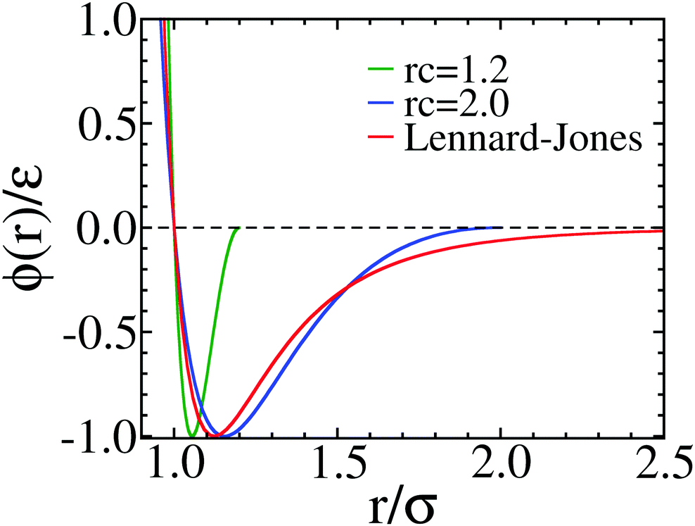

Quyen Vu
Team
Publications
Tools
About me
Everything Happens for a Reason
Categories
All
(10)
HPC
(2)
IDP
(2)
Linux
(1)
OpenMM
(4)
Protein
(1)
Python
(3)
Slurm
(2)
Visualization
(1)
Recent posts
Some Conda Commands Frequently Used
Python
conda
is a great python package environment.
Feb 24, 2023
Quyen Vu
Simple OpenMM system for testing code development
OpenMM
This post contains a simple system definition of two beads with custom nonbonded for testing
Feb 9, 2023
Quyen Vu
hpsOpenMM tutorial
IDP
OpenMM
This tutorial guide you how to use hpsOpenMM to perform coarse-grained simulations of IDPs
Feb 4, 2023
Quyen Vu

Implementation of Mpipi model in OpenMM
IDP
OpenMM
Mpipi model is a coarse-grain model for simulating IDP.
The original code is implemented in LAMMPS but I am not familiar with LAMMPS either.
Jan 11, 2023
Quyen Vu
Make a beautiful plot using Matplotlib
Python
Visualization
When writing a paper, a beautiful figure is very important. Before, I used Gnuplot or XMGRACE to make figures because it is easy to config.
Dec 24, 2022
Quyen Vu
Problems regarding ipywidgets has no attribute ‘version_info’
Python
With the recent update of
ipywidgets
, Pyemma, MDAnalysis and some other package encounter problems with
ipywidgets
.
Dec 11, 2022
Quyen Vu
Some Linux commands frequently used
Linux
This post contains some
bash
code-snippet to make my daily work easier.
Dec 9, 2022
Quyen Vu
Openmm Coarse-grained Simulations
HPC
Slurm
OpenMM
Notes on cluster information:
Dec 9, 2022
Quyen Vu
Running jobs on clusters
HPC
Slurm
Nov 26, 2022
Quyen Vu
Amino acid table
Protein
21 amino acids make up proteins.
Nov 25, 2022
Quyen Vu
No matching items